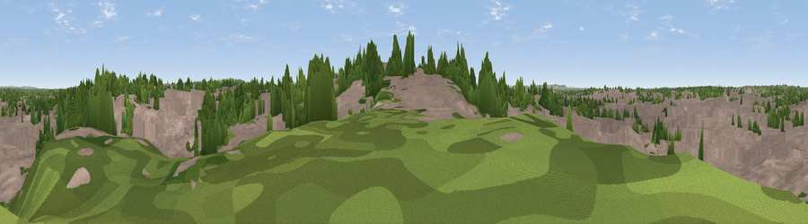

Church Hill
#46007 in England · top 96% of its area beats it · near WalsallWhere it is
The exact computed spot (SP 01637 98279). Click the marker for map links.
The view, rendered

A 360° render of this exact spot computed from the terrain model, tree cover and land cover — summer colours, afternoon light, calibrated against photographs of famous viewpoints. Real trees, hedges and buildings will differ in detail.
The panorama
Grey silhouette: terrain skyline in each direction (720 bearings, Earth curvature and refraction included). Dashed green: skyline with trees (+15 m) and buildings (+8 m) as obstacles. Blue strip: how far the ground is visible on each bearing.
Where the view opens
Wedge length = distance to the farthest visible ground on that bearing (vegetation-aware). Rings at 10, 25 and 50 km.
What fills the view
79% built-up · 18% woodland · 2% grassland
Angular shares of the visible panorama (visual magnitude), not map area. Landscape diversity 0.26 (0–1 Shannon).
Key numbers
More beautiful places nearby
The staircase of upgrades: each row has a higher view potential than everything closer. Driving times are estimates from straight-line distance, calibrated against real road routing — check an actual route before setting out.
| Place | Direction | Drive | Score |
|---|---|---|---|
| Viewpoint near Wednesbury | SW · 4 km | ~9 min | 28.7 |
| Viewpoint near Streetly | E · 5 km | ~10 min | 69.5 |
| Viewpoint near Clent | SSW · 19 km | ~33 min | 73.8 |
| Viewpoint near Clent | SSW · 20 km | ~34 min | 74.3 |
| Knowle Hill | WSW · 36 km | ~55 min | 75.5 |
| The Ercall | WNW · 39 km | ~58 min | 79.4 |
| Viewpoint near Little Wenlock | WNW · 40 km | ~59 min | 84.2 |
| The Wrekin | WNW · 40 km | ~59 min | 85.0 |
52.58232, -1.97727 · source: osm peak · position refined by local search. Computed location — check access rights before visiting.